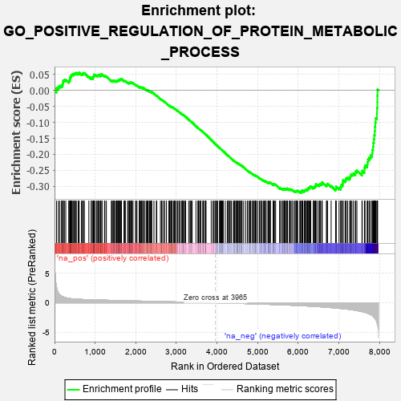

| | | Dataset | 7d |
| Phenotype | NoPhenotypeAvailable |
| Upregulated in class | na_neg |
| GeneSet | GO_POSITIVE_REGULATION_OF_PROTEIN_METABOLIC_PROCESS |
| Enrichment Score (ES) | -0.32060465 |
| Normalized Enrichment Score (NES) | -1.1224315 |
| Nominal p-value | 0.18850806 |
| FDR q-value | 0.7299556 |
| FWER p-Value | 1.0 |
Table: GSEA Results Summary

Fig 1: Enrichment plot: GO_POSITIVE_REGULATION_OF_PROTEIN_METABOLIC_PROCESS
Profile of the Running ES Score & Positions of GeneSet Members on the Rank Ordered List
| PROBE | GENE SYMBOL | GENE_TITLE | RANK IN GENE LIST | RANK METRIC SCORE | RUNNING ES | CORE ENRICHMENT | | 1 | TGFB3 | | | 49 | 2.654 | 0.0076 | No |
| 2 | UBE2K | | | 94 | 1.739 | 0.0109 | No |
| 3 | ADCY8 | | | 124 | 1.418 | 0.0146 | No |
| 4 | AXIN1 | | | 166 | 1.159 | 0.0153 | No |
| 5 | WNT16 | | | 198 | 1.072 | 0.0169 | No |
| 6 | BCL3 | | | 202 | 1.047 | 0.0221 | No |
| 7 | SPDYA | | | 211 | 1.026 | 0.0264 | No |
| 8 | SPSB4 | | | 214 | 1.019 | 0.0315 | No |
| 9 | NSF | | | 243 | 0.947 | 0.0328 | No |
| 10 | HGF | | | 276 | 0.870 | 0.0332 | No |
| 11 | GSK3A | | | 351 | 0.745 | 0.0274 | No |
| 12 | ARNT | | | 357 | 0.741 | 0.0307 | No |
| 13 | CLSPN | | | 379 | 0.719 | 0.0317 | No |
| 14 | PLD1 | | | 381 | 0.716 | 0.0354 | No |
| 15 | AXIN2 | | | 383 | 0.713 | 0.0390 | No |
| 16 | BAX | | | 387 | 0.711 | 0.0423 | No |
| 17 | NBN | | | 405 | 0.696 | 0.0438 | No |
| 18 | EED | | | 409 | 0.690 | 0.0470 | No |
| 19 | CNPY2 | | | 421 | 0.680 | 0.0492 | No |
| 20 | CENPS | | | 439 | 0.666 | 0.0504 | No |
| 21 | LRP1 | | | 470 | 0.648 | 0.0499 | No |
| 22 | CDC20 | | | 480 | 0.644 | 0.0521 | No |
| 23 | LARP6 | | | 498 | 0.630 | 0.0532 | No |
| 24 | HTRA2 | | | 527 | 0.621 | 0.0528 | No |
| 25 | PKN1 | | | 535 | 0.619 | 0.0552 | No |
| 26 | CCNB1 | | | 581 | 0.601 | 0.0524 | No |
| 27 | FBXW8 | | | 601 | 0.594 | 0.0531 | No |
| 28 | DHX33 | | | 605 | 0.593 | 0.0558 | No |
| 29 | HES5 | | | 661 | 0.571 | 0.0516 | No |
| 30 | MRE11 | | | 693 | 0.560 | 0.0505 | No |
| 31 | XRCC6 | | | 694 | 0.560 | 0.0534 | No |
| 32 | CDC6 | | | 709 | 0.557 | 0.0545 | No |
| 33 | WDR61 | | | 734 | 0.549 | 0.0543 | No |
| 34 | NRDC | | | 845 | 0.521 | 0.0426 | No |
| 35 | TMTC3 | | | 903 | 0.506 | 0.0378 | No |
| 36 | STOX1 | | | 905 | 0.506 | 0.0403 | No |
| 37 | PTPA | | | 947 | 0.497 | 0.0375 | No |
| 38 | ADRM1 | | | 948 | 0.496 | 0.0402 | No |
| 39 | CCND2 | | | 949 | 0.496 | 0.0428 | No |
| 40 | CTR9 | | | 964 | 0.492 | 0.0435 | No |
| 41 | ATG10 | | | 970 | 0.490 | 0.0455 | No |
| 42 | DVL3 | | | 971 | 0.490 | 0.0480 | No |
| 43 | WDR48 | | | 975 | 0.489 | 0.0502 | No |
| 44 | TELO2 | | | 1006 | 0.482 | 0.0488 | No |
| 45 | AKT1 | | | 1040 | 0.476 | 0.0470 | No |
| 46 | FZD10 | | | 1065 | 0.470 | 0.0463 | No |
| 47 | AIFM1 | | | 1072 | 0.469 | 0.0480 | No |
| 48 | CDK10 | | | 1092 | 0.465 | 0.0480 | No |
| 49 | SRC | | | 1128 | 0.459 | 0.0458 | No |
| 50 | KMT2A | | | 1130 | 0.458 | 0.0481 | No |
| 51 | NCK2 | | | 1131 | 0.458 | 0.0505 | No |
| 52 | CKS2 | | | 1165 | 0.452 | 0.0485 | No |
| 53 | CCNY | | | 1168 | 0.451 | 0.0507 | No |
| 54 | NSUN5 | | | 1230 | 0.442 | 0.0450 | No |
| 55 | KAT7 | | | 1240 | 0.440 | 0.0461 | No |
| 56 | EIF3D | | | 1276 | 0.435 | 0.0438 | No |
| 57 | DOCK7 | | | 1398 | 0.410 | 0.0301 | No |
| 58 | P2RY1 | | | 1416 | 0.407 | 0.0300 | No |
| 59 | PTBP1 | | | 1441 | 0.402 | 0.0290 | No |
| 60 | RBX1 | | | 1445 | 0.401 | 0.0307 | No |
| 61 | RMND1 | | | 1470 | 0.396 | 0.0297 | No |
| 62 | TIMP2 | | | 1478 | 0.394 | 0.0308 | No |
| 63 | INHBB | | | 1514 | 0.388 | 0.0283 | No |
| 64 | WDFY2 | | | 1522 | 0.388 | 0.0294 | No |
| 65 | FANCI | | | 1537 | 0.385 | 0.0296 | No |
| 66 | UQCC1 | | | 1542 | 0.384 | 0.0311 | No |
| 67 | BOLL | | | 1561 | 0.381 | 0.0307 | No |
| 68 | FZD1 | | | 1574 | 0.379 | 0.0312 | No |
| 69 | PAF1 | | | 1588 | 0.376 | 0.0314 | No |
| 70 | ERP29 | | | 1589 | 0.376 | 0.0334 | No |
| 71 | CCNK | | | 1596 | 0.374 | 0.0346 | No |
| 72 | BIRC8 | | | 1615 | 0.372 | 0.0342 | No |
| 73 | CDK4 | | | 1626 | 0.370 | 0.0348 | No |
| 74 | DDB1 | | | 1642 | 0.366 | 0.0348 | No |
| 75 | RXRA | | | 1647 | 0.365 | 0.0362 | No |
| 76 | TPX2 | | | 1708 | 0.355 | 0.0302 | No |
| 77 | KMT2E | | | 1730 | 0.350 | 0.0293 | No |
| 78 | MRNIP | | | 1743 | 0.346 | 0.0295 | No |
| 79 | FNIP1 | | | 1798 | 0.338 | 0.0242 | No |
| 80 | FMR1 | | | 1816 | 0.334 | 0.0238 | No |
| 81 | GATA4 | | | 1837 | 0.330 | 0.0229 | No |
| 82 | RTF1 | | | 1844 | 0.329 | 0.0238 | No |
| 83 | TRIM5 | | | 1852 | 0.327 | 0.0246 | No |
| 84 | SMAD4 | | | 1860 | 0.326 | 0.0254 | No |
| 85 | PAK3 | | | 1889 | 0.322 | 0.0234 | No |
| 86 | CUL3 | | | 1893 | 0.321 | 0.0247 | No |
| 87 | TRUB2 | | | 1908 | 0.319 | 0.0246 | No |
| 88 | HACD3 | | | 1932 | 0.315 | 0.0232 | No |
| 89 | ROR1 | | | 1993 | 0.306 | 0.0170 | No |
| 90 | RAF1 | | | 2011 | 0.303 | 0.0163 | No |
| 91 | JMJD4 | | | 2029 | 0.301 | 0.0157 | No |
| 92 | SART3 | | | 2084 | 0.293 | 0.0101 | No |
| 93 | CENPE | | | 2086 | 0.293 | 0.0116 | No |
| 94 | BMP7 | | | 2107 | 0.290 | 0.0105 | No |
| 95 | SNF8 | | | 2119 | 0.288 | 0.0105 | No |
| 96 | PSME4 | | | 2143 | 0.285 | 0.0090 | No |
| 97 | DTL | | | 2154 | 0.284 | 0.0092 | No |
| 98 | SYK | | | 2186 | 0.278 | 0.0066 | No |
| 99 | C1QBP | | | 2189 | 0.278 | 0.0078 | No |
| 100 | MYLIP | | | 2225 | 0.272 | 0.0047 | No |
| 101 | SHC2 | | | 2263 | 0.266 | 0.0012 | No |
| 102 | NSD3 | | | 2279 | 0.263 | 0.0006 | No |
| 103 | NSUN4 | | | 2301 | 0.260 | -0.0008 | No |
| 104 | REST | | | 2308 | 0.259 | -0.0002 | No |
| 105 | FAF1 | | | 2340 | 0.255 | -0.0029 | No |
| 106 | MIF | | | 2357 | 0.252 | -0.0037 | No |
| 107 | SYMPK | | | 2381 | 0.248 | -0.0054 | No |
| 108 | HIPK2 | | | 2389 | 0.247 | -0.0050 | No |
| 109 | SAE1 | | | 2390 | 0.247 | -0.0037 | No |
| 110 | KDM1A | | | 2447 | 0.237 | -0.0098 | No |
| 111 | HUWE1 | | | 2506 | 0.225 | -0.0162 | No |
| 112 | TLR1 | | | 2517 | 0.224 | -0.0164 | No |
| 113 | EMC10 | | | 2607 | 0.211 | -0.0269 | No |
| 114 | EIF3E | | | 2634 | 0.207 | -0.0293 | No |
| 115 | KAT5 | | | 2644 | 0.206 | -0.0293 | No |
| 116 | SASH1 | | | 2682 | 0.201 | -0.0331 | No |
| 117 | PHB2 | | | 2712 | 0.197 | -0.0359 | No |
| 118 | FNTA | | | 2755 | 0.190 | -0.0404 | No |
| 119 | SYAP1 | | | 2811 | 0.182 | -0.0467 | No |
| 120 | EIF3C | | | 2832 | 0.179 | -0.0484 | No |
| 121 | CLN6 | | | 2847 | 0.177 | -0.0493 | No |
| 122 | CIRBP | | | 2876 | 0.170 | -0.0520 | No |
| 123 | PDCD5 | | | 2885 | 0.169 | -0.0522 | No |
| 124 | WDR5 | | | 2892 | 0.168 | -0.0521 | No |
| 125 | FGFR2 | | | 2895 | 0.167 | -0.0515 | No |
| 126 | ACVR1 | | | 2932 | 0.161 | -0.0554 | No |
| 127 | SOCS4 | | | 2953 | 0.157 | -0.0572 | No |
| 128 | MTCH1 | | | 2966 | 0.155 | -0.0579 | No |
| 129 | UBE2S | | | 2980 | 0.153 | -0.0588 | No |
| 130 | BRD7 | | | 3018 | 0.147 | -0.0629 | No |
| 131 | PIAS4 | | | 3034 | 0.145 | -0.0641 | No |
| 132 | KEAP1 | | | 3063 | 0.141 | -0.0670 | No |
| 133 | CHP1 | | | 3089 | 0.138 | -0.0696 | No |
| 134 | WWP1 | | | 3127 | 0.133 | -0.0737 | No |
| 135 | EDEM2 | | | 3145 | 0.131 | -0.0753 | No |
| 136 | ERN2 | | | 3160 | 0.129 | -0.0764 | No |
| 137 | GCNT2 | | | 3162 | 0.128 | -0.0759 | No |
| 138 | AKTIP | | | 3178 | 0.125 | -0.0772 | No |
| 139 | FZR1 | | | 3205 | 0.122 | -0.0800 | No |
| 140 | RCC1L | | | 3228 | 0.117 | -0.0822 | No |
| 141 | SMAD3 | | | 3303 | 0.105 | -0.0914 | No |
| 142 | CHFR | | | 3335 | 0.099 | -0.0949 | No |
| 143 | TAB1 | | | 3351 | 0.097 | -0.0964 | No |
| 144 | SMAD7 | | | 3369 | 0.093 | -0.0981 | No |
| 145 | DDX3X | | | 3388 | 0.091 | -0.1000 | No |
| 146 | CDK5 | | | 3480 | 0.080 | -0.1115 | No |
| 147 | HDAC3 | | | 3528 | 0.072 | -0.1173 | No |
| 148 | ASB11 | | | 3537 | 0.070 | -0.1180 | No |
| 149 | PIN1 | | | 3543 | 0.069 | -0.1183 | No |
| 150 | DERL1 | | | 3570 | 0.065 | -0.1214 | No |
| 151 | MAPK3 | | | 3589 | 0.062 | -0.1234 | No |
| 152 | STK25 | | | 3602 | 0.059 | -0.1247 | No |
| 153 | DOK7 | | | 3603 | 0.059 | -0.1244 | No |
| 154 | SPRTN | | | 3651 | 0.051 | -0.1302 | No |
| 155 | FIS1 | | | 3654 | 0.051 | -0.1302 | No |
| 156 | SKP1 | | | 3663 | 0.049 | -0.1310 | No |
| 157 | DHX9 | | | 3693 | 0.044 | -0.1346 | No |
| 158 | HSF1 | | | 3718 | 0.039 | -0.1376 | No |
| 159 | DAXX | | | 3722 | 0.038 | -0.1377 | No |
| 160 | CNBP | | | 3728 | 0.037 | -0.1382 | No |
| 161 | DGKQ | | | 3856 | 0.020 | -0.1548 | No |
| 162 | NIPBL | | | 3900 | 0.010 | -0.1604 | No |
| 163 | NRG3 | | | 3925 | 0.005 | -0.1635 | No |
| 164 | GGA1 | | | 3952 | 0.002 | -0.1669 | No |
| 165 | IGF1R | | | 3970 | -0.002 | -0.1691 | No |
| 166 | VPS35 | | | 3989 | -0.006 | -0.1714 | No |
| 167 | PCIF1 | | | 4004 | -0.009 | -0.1732 | No |
| 168 | RNF14 | | | 4013 | -0.010 | -0.1742 | No |
| 169 | TAL1 | | | 4064 | -0.018 | -0.1807 | No |
| 170 | SFRP2 | | | 4065 | -0.018 | -0.1806 | No |
| 171 | CSF1 | | | 4074 | -0.019 | -0.1815 | No |
| 172 | PDE8A | | | 4097 | -0.023 | -0.1843 | No |
| 173 | TRAF1 | | | 4104 | -0.024 | -0.1850 | No |
| 174 | MTOR | | | 4114 | -0.025 | -0.1860 | No |
| 175 | ABL1 | | | 4125 | -0.027 | -0.1872 | No |
| 176 | PLCE1 | | | 4127 | -0.028 | -0.1872 | No |
| 177 | CRK | | | 4139 | -0.031 | -0.1884 | No |
| 178 | WNK3 | | | 4153 | -0.034 | -0.1900 | No |
| 179 | VPS11 | | | 4202 | -0.041 | -0.1960 | No |
| 180 | RPTOR | | | 4252 | -0.050 | -0.2022 | No |
| 181 | PSME3 | | | 4280 | -0.056 | -0.2055 | No |
| 182 | WNT11 | | | 4282 | -0.056 | -0.2053 | No |
| 183 | BAG4 | | | 4314 | -0.061 | -0.2090 | No |
| 184 | CTBP1 | | | 4323 | -0.064 | -0.2097 | No |
| 185 | ADRB2 | | | 4352 | -0.068 | -0.2131 | No |
| 186 | STX5 | | | 4400 | -0.077 | -0.2188 | No |
| 187 | PRR5L | | | 4418 | -0.080 | -0.2206 | No |
| 188 | MYDGF | | | 4429 | -0.081 | -0.2215 | No |
| 189 | COA3 | | | 4435 | -0.083 | -0.2217 | No |
| 190 | ERCC6 | | | 4464 | -0.087 | -0.2250 | No |
| 191 | LRRK2 | | | 4467 | -0.087 | -0.2248 | No |
| 192 | HIP1 | | | 4485 | -0.092 | -0.2265 | No |
| 193 | MOB2 | | | 4504 | -0.095 | -0.2284 | No |
| 194 | ILK | | | 4510 | -0.096 | -0.2285 | No |
| 195 | SNW1 | | | 4514 | -0.096 | -0.2284 | No |
| 196 | NPTN | | | 4519 | -0.098 | -0.2284 | No |
| 197 | NTRK2 | | | 4543 | -0.104 | -0.2309 | No |
| 198 | APC | | | 4558 | -0.107 | -0.2321 | No |
| 199 | BAG6 | | | 4563 | -0.108 | -0.2321 | No |
| 200 | VPS28 | | | 4582 | -0.114 | -0.2339 | No |
| 201 | NUB1 | | | 4604 | -0.119 | -0.2360 | No |
| 202 | ADTRP | | | 4612 | -0.120 | -0.2363 | No |
| 203 | GATA3 | | | 4614 | -0.120 | -0.2358 | No |
| 204 | FGFR3 | | | 4656 | -0.129 | -0.2405 | No |
| 205 | RAP1B | | | 4706 | -0.140 | -0.2462 | No |
| 206 | FBLN1 | | | 4748 | -0.149 | -0.2508 | No |
| 207 | WBP2 | | | 4780 | -0.153 | -0.2540 | No |
| 208 | TNIK | | | 4804 | -0.158 | -0.2562 | No |
| 209 | FBXW7 | | | 4816 | -0.161 | -0.2568 | No |
| 210 | TAOK3 | | | 4823 | -0.162 | -0.2567 | No |
| 211 | DLG1 | | | 4860 | -0.169 | -0.2606 | No |
| 212 | CLU | | | 4889 | -0.174 | -0.2633 | No |
| 213 | MARK2 | | | 4899 | -0.177 | -0.2636 | No |
| 214 | CASP1 | | | 4932 | -0.185 | -0.2668 | No |
| 215 | FZD4 | | | 4940 | -0.186 | -0.2667 | No |
| 216 | XRCC5 | | | 4946 | -0.187 | -0.2664 | No |
| 217 | PRKDC | | | 4955 | -0.189 | -0.2664 | No |
| 218 | ATG4B | | | 4968 | -0.192 | -0.2670 | No |
| 219 | KLF4 | | | 5005 | -0.198 | -0.2707 | No |
| 220 | PDPK1 | | | 5043 | -0.207 | -0.2744 | No |
| 221 | RAP2C | | | 5073 | -0.218 | -0.2771 | No |
| 222 | DRD2 | | | 5088 | -0.221 | -0.2778 | No |
| 223 | MMP9 | | | 5108 | -0.227 | -0.2791 | No |
| 224 | FLCN | | | 5140 | -0.235 | -0.2819 | No |
| 225 | TBX1 | | | 5166 | -0.241 | -0.2839 | No |
| 226 | NEK10 | | | 5180 | -0.244 | -0.2843 | No |
| 227 | HDAC6 | | | 5183 | -0.244 | -0.2833 | No |
| 228 | ATM | | | 5210 | -0.249 | -0.2854 | No |
| 229 | IDE | | | 5252 | -0.258 | -0.2894 | No |
| 230 | PTEN | | | 5262 | -0.261 | -0.2892 | No |
| 231 | CDK1 | | | 5264 | -0.262 | -0.2880 | No |
| 232 | EPHA4 | | | 5273 | -0.265 | -0.2876 | No |
| 233 | MAGI2 | | | 5295 | -0.269 | -0.2890 | No |
| 234 | RAB7A | | | 5302 | -0.271 | -0.2883 | No |
| 235 | RAD50 | | | 5314 | -0.276 | -0.2883 | No |
| 236 | GRIN1 | | | 5381 | -0.291 | -0.2954 | No |
| 237 | FZD5 | | | 5386 | -0.292 | -0.2944 | No |
| 238 | DLG4 | | | 5388 | -0.293 | -0.2930 | No |
| 239 | SUMO2 | | | 5402 | -0.296 | -0.2932 | No |
| 240 | LATS1 | | | 5412 | -0.298 | -0.2928 | No |
| 241 | IST1 | | | 5442 | -0.305 | -0.2950 | No |
| 242 | EDEM1 | | | 5541 | -0.331 | -0.3061 | No |
| 243 | FGFR1 | | | 5543 | -0.332 | -0.3045 | No |
| 244 | SPHK1 | | | 5576 | -0.339 | -0.3069 | No |
| 245 | GNL3 | | | 5614 | -0.349 | -0.3099 | No |
| 246 | LARP1 | | | 5616 | -0.349 | -0.3082 | No |
| 247 | ROR2 | | | 5626 | -0.353 | -0.3075 | No |
| 248 | WNK1 | | | 5650 | -0.362 | -0.3086 | No |
| 249 | SOAT1 | | | 5657 | -0.363 | -0.3075 | No |
| 250 | CASP8 | | | 5678 | -0.369 | -0.3082 | No |
| 251 | MADD | | | 5686 | -0.371 | -0.3071 | No |
| 252 | CLPX | | | 5717 | -0.381 | -0.3091 | No |
| 253 | CALCR | | | 5730 | -0.386 | -0.3086 | No |
| 254 | DAP | | | 5732 | -0.386 | -0.3067 | No |
| 255 | ABCG1 | | | 5778 | -0.399 | -0.3105 | No |
| 256 | TRPC6 | | | 5784 | -0.401 | -0.3090 | No |
| 257 | CCNT2 | | | 5804 | -0.406 | -0.3094 | No |
| 258 | FANCM | | | 5824 | -0.413 | -0.3097 | No |
| 259 | ATG7 | | | 5858 | -0.420 | -0.3118 | No |
| 260 | VLDLR | | | 5898 | -0.434 | -0.3146 | No |
| 261 | STK11 | | | 5922 | -0.443 | -0.3153 | No |
| 262 | LDB1 | | | 5944 | -0.451 | -0.3157 | No |
| 263 | SGSM3 | | | 5957 | -0.457 | -0.3149 | No |
| 264 | TTBK1 | | | 5969 | -0.460 | -0.3139 | No |
| 265 | SCAP | | | 5986 | -0.466 | -0.3135 | No |
| 266 | RAC1 | | | 6036 | -0.484 | -0.3174 | No |
| 267 | FZD8 | | | 6051 | -0.490 | -0.3167 | No |
| 268 | PLK1 | | | 6082 | -0.500 | -0.3180 | Yes |
| 269 | DBNL | | | 6084 | -0.501 | -0.3155 | Yes |
| 270 | UBB | | | 6090 | -0.503 | -0.3135 | Yes |
| 271 | ATG13 | | | 6110 | -0.508 | -0.3133 | Yes |
| 272 | STK4 | | | 6145 | -0.518 | -0.3150 | Yes |
| 273 | ROCK1 | | | 6152 | -0.520 | -0.3131 | Yes |
| 274 | EGR1 | | | 6165 | -0.527 | -0.3119 | Yes |
| 275 | KLF2 | | | 6182 | -0.532 | -0.3112 | Yes |
| 276 | INSR | | | 6204 | -0.538 | -0.3111 | Yes |
| 277 | EHD4 | | | 6227 | -0.545 | -0.3111 | Yes |
| 278 | RGN | | | 6233 | -0.547 | -0.3089 | Yes |
| 279 | CDC42 | | | 6236 | -0.548 | -0.3062 | Yes |
| 280 | TFAP4 | | | 6254 | -0.556 | -0.3055 | Yes |
| 281 | STK39 | | | 6274 | -0.563 | -0.3051 | Yes |
| 282 | FLOT1 | | | 6276 | -0.564 | -0.3022 | Yes |
| 283 | TRAF7 | | | 6290 | -0.571 | -0.3009 | Yes |
| 284 | IFT57 | | | 6307 | -0.579 | -0.3000 | Yes |
| 285 | BIRC3 | | | 6366 | -0.603 | -0.3044 | Yes |
| 286 | CDON | | | 6378 | -0.607 | -0.3026 | Yes |
| 287 | RALB | | | 6399 | -0.617 | -0.3020 | Yes |
| 288 | UBE2N | | | 6407 | -0.621 | -0.2997 | Yes |
| 289 | CSK | | | 6428 | -0.630 | -0.2990 | Yes |
| 290 | MALT1 | | | 6432 | -0.634 | -0.2960 | Yes |
| 291 | ABCA2 | | | 6433 | -0.634 | -0.2927 | Yes |
| 292 | SOX2 | | | 6477 | -0.652 | -0.2949 | Yes |
| 293 | TRPV4 | | | 6515 | -0.668 | -0.2962 | Yes |
| 294 | ACE | | | 6526 | -0.674 | -0.2940 | Yes |
| 295 | DDR2 | | | 6542 | -0.681 | -0.2924 | Yes |
| 296 | ROBO1 | | | 6577 | -0.699 | -0.2931 | Yes |
| 297 | INHBE | | | 6584 | -0.701 | -0.2902 | Yes |
| 298 | RNF41 | | | 6588 | -0.703 | -0.2869 | Yes |
| 299 | PAK1 | | | 6691 | -0.757 | -0.2963 | Yes |
| 300 | EGFR | | | 6708 | -0.765 | -0.2944 | Yes |
| 301 | GSK3B | | | 6719 | -0.768 | -0.2916 | Yes |
| 302 | ADAM9 | | | 6808 | -0.819 | -0.2989 | Yes |
| 303 | CSPG4 | | | 6918 | -0.878 | -0.3085 | Yes |
| 304 | SNX33 | | | 6930 | -0.888 | -0.3053 | Yes |
| 305 | LRP8 | | | 6931 | -0.889 | -0.3006 | Yes |
| 306 | CCR2 | | | 7003 | -0.939 | -0.3050 | Yes |
| 307 | FBXL5 | | | 7046 | -0.965 | -0.3054 | Yes |
| 308 | PIBF1 | | | 7049 | -0.966 | -0.3006 | Yes |
| 309 | GRM5 | | | 7053 | -0.969 | -0.2959 | Yes |
| 310 | BBS7 | | | 7089 | -0.988 | -0.2953 | Yes |
| 311 | RAB1A | | | 7096 | -0.993 | -0.2908 | Yes |
| 312 | CSH1 | | | 7098 | -0.995 | -0.2857 | Yes |
| 313 | RYK | | | 7102 | -1.000 | -0.2808 | Yes |
| 314 | SPON1 | | | 7151 | -1.035 | -0.2817 | Yes |
| 315 | AR | | | 7169 | -1.046 | -0.2784 | Yes |
| 316 | PTPRJ | | | 7180 | -1.054 | -0.2741 | Yes |
| 317 | KLKB1 | | | 7216 | -1.090 | -0.2730 | Yes |
| 318 | CDK9 | | | 7266 | -1.138 | -0.2734 | Yes |
| 319 | CIB1 | | | 7280 | -1.152 | -0.2691 | Yes |
| 320 | ASTL | | | 7290 | -1.159 | -0.2641 | Yes |
| 321 | GRN | | | 7319 | -1.194 | -0.2615 | Yes |
| 322 | WDR35 | | | 7357 | -1.225 | -0.2599 | Yes |
| 323 | GRM1 | | | 7404 | -1.272 | -0.2592 | Yes |
| 324 | UBC | | | 7410 | -1.274 | -0.2532 | Yes |
| 325 | CASP2 | | | 7442 | -1.322 | -0.2503 | Yes |
| 326 | CALM1 | | | 7567 | -1.499 | -0.2587 | Yes |
| 327 | TRAF4 | | | 7573 | -1.514 | -0.2513 | Yes |
| 328 | PKD1 | | | 7628 | -1.611 | -0.2499 | Yes |
| 329 | PDCD6 | | | 7630 | -1.615 | -0.2415 | Yes |
| 330 | TAF1 | | | 7643 | -1.633 | -0.2345 | Yes |
| 331 | ADCY1 | | | 7695 | -1.752 | -0.2320 | Yes |
| 332 | ADCY9 | | | 7704 | -1.783 | -0.2236 | Yes |
| 333 | BOK | | | 7715 | -1.817 | -0.2154 | Yes |
| 334 | CASP3 | | | 7747 | -1.902 | -0.2094 | Yes |
| 335 | ST18 | | | 7780 | -2.007 | -0.2030 | Yes |
| 336 | TRAF6 | | | 7818 | -2.157 | -0.1965 | Yes |
| 337 | PKD2 | | | 7822 | -2.167 | -0.1855 | Yes |
| 338 | SP1 | | | 7840 | -2.321 | -0.1755 | Yes |
| 339 | GRM4 | | | 7847 | -2.393 | -0.1637 | Yes |
| 340 | TRAF2 | | | 7861 | -2.481 | -0.1523 | Yes |
| 341 | CALM3 | | | 7869 | -2.525 | -0.1399 | Yes |
| 342 | FYN | | | 7881 | -2.622 | -0.1275 | Yes |
| 343 | TRAF3 | | | 7886 | -2.695 | -0.1138 | Yes |
| 344 | CAV3 | | | 7896 | -2.739 | -0.1006 | Yes |
| 345 | PLCB1 | | | 7904 | -2.841 | -0.0865 | Yes |
| 346 | ARRB1 | | | 7935 | -3.377 | -0.0727 | Yes |
| 347 | TRAF5 | | | 7938 | -3.448 | -0.0548 | Yes |
| 348 | PASK | | | 7946 | -3.674 | -0.0363 | Yes |
| 349 | XIAP | | | 7947 | -3.696 | -0.0168 | Yes |
| 350 | DAPK1 | | | 7950 | -3.767 | 0.0028 | Yes |
Table: GSEA details [plain text format]
 Fig 2: GO_POSITIVE_REGULATION_OF_PROTEIN_METABOLIC_PROCESS: Random ES distribution
Fig 2: GO_POSITIVE_REGULATION_OF_PROTEIN_METABOLIC_PROCESS: Random ES distribution
Gene set null distribution of ES for GO_POSITIVE_REGULATION_OF_PROTEIN_METABOLIC_PROCESS